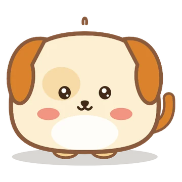
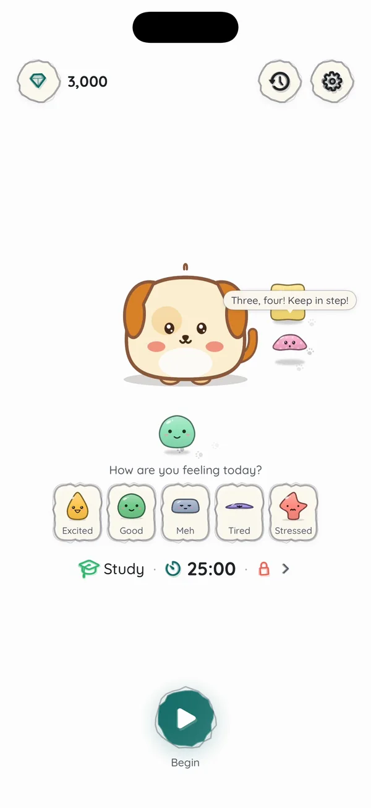
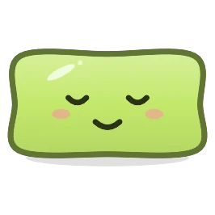
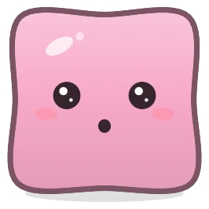
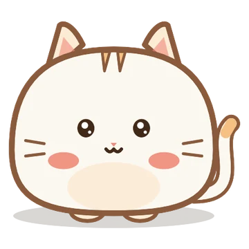
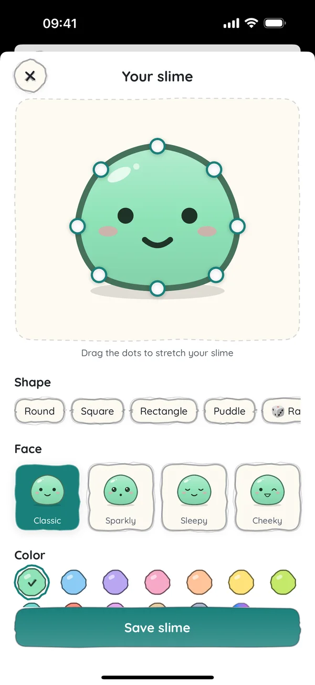
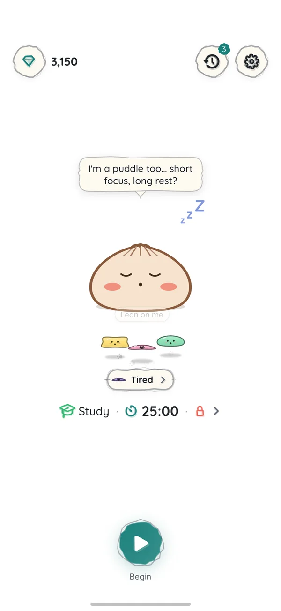
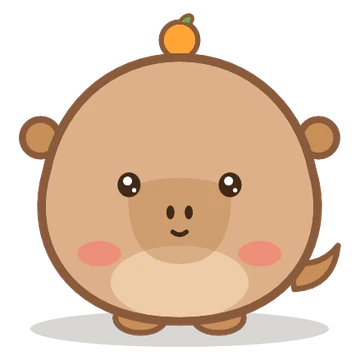

Фокус
Обери одне завдання і запусти великий наочний відлік. Якщо хочеш, додай дощ або хвилі.
Nomodoro — спокійний наочний помодоро для iPhone. Обери одне завдання, запусти м’який відлік, і нехай твій мальований компаньйон і загін слаймів складуть тобі компанію — вони навіть відчувають твій настрій.




Жодних заплутаних налаштувань. Лише одне завдання, один відлік і друг, який залишається з тобою.

Обери одне завдання і запусти великий наочний відлік. Якщо хочеш, додай дощ або хвилі.

Видихни між раундами і розкажи Nomodoro, як ти почуваєшся. Твій компаньйон теж відпочиває.
Після кількох раундів зроби довгу перерву, заробляй кристали й відкривай нових друзів.
Усе, що потрібно, щоб почати, — і тиха глибина, коли захочеш більшого.

Велике кільце, спокійний таймер і компаньйон, що дрімає, поки ти працюєш. Відлік униз або вгору, з короткими й довгими перервами.

Задай щоденні проміжки й обери програми, які тебе відтягують. Вони залишаються заблокованими — навіть коли Nomodoro закрито. Заверши сесію фокусу, і вони відкриються рівно на твою перерву, а потім знову заблокуються.

Більше ніяких втеч одним дотиком. Тримай «Завершити» — і друзяка починає плакати… відпусти — і він радіє. Маленька пауза, що рятує багато сесій.


Тягни точки, щоб надати слайму форму, потім обери колір, мордочку й візерунок. Він приєднається до загону й стрибатиме довкола таймера, поки ти фокусуєшся.

Розкажи Nomodoro, як ти почуваєшся. Втомлений — і слайми розтікаються калюжками. Радісний — і вони стрибають. У важкі дні компаньйон навіть запропонує коротший фокус.

Торкнись будь-якого дня на карті активності чи тижневому графіку, щоб побачити час фокусу, сесії й найдовший фокус. Під кожним стовпчиком — твій настрій. Перетвори день на милу картку одним дотиком.
Запускай звичні завдання одним дотиком. Став на паузу чи завершуй сесію просто з Початкового екрана.
Таймер залишається на Замкненому екрані та в Dynamic Island.
Для початку — хвилі, дощ і вітер. Pro додає птахів, листя, струмок, вогонь, грім, цвіркунів і водоспад.
М’який нічний вигляд для пізніх сесій навчання.
Експорт та імпорт повної резервної копії будь-коли — для всіх.
Одне завдання, мало шуму, дружні раунди. Це не лікування — просто спокійніший спосіб почати.
Кожна хвилина фокусу приносить кристали. Забирай нового компаньйона, коли їх вистачить, — п’ятеро ексклюзивних ідуть разом із Pro.
Необмежений фокус безкоштовний назавжди. Pro — за бажанням: обери план, який тобі підходить.
Усе, щоб почати вже сьогодні

Власний розклад і кілька приємностей
Ціни в USD з каталогу App Store; місцева валюта й податки можуть відрізнятися залежно від регіону.
Так. Необмежені сесії фокусу, усі режими фокусу (Суворий, Вільний, Білий список), один проміжок Годин фокусу, уся історія й графіки, резервна копія, відмітка настрою й один власний слайм залишаються безкоштовними. Pro додає більше Годин фокусу, загін до 3 слаймів, більше звуків, власні перерви & раунди та ексклюзивних друзів. Інші компаньйони, як і раніше, відкриваються кристалами за фокус.
Задай щоденні проміжки часу й обери програми, які тебе відволікають. Під час проміжку ці програми залишаються заблокованими, навіть коли Nomodoro закрито. Заверши сесію фокусу, і вони відкриються рівно на твою перерву, а потім знову заблокуються. Безкоштовно: один проміжок щодня, до 3 програм. Pro: до 5 проміжків у вибрані дні, будь-яка кількість програм і цілі категорії. Використовується API Екранного часу Apple, і твій вибір ніколи не покидає iPhone.
Так, двома способами, обидва на основі Екранного часу Apple. Режим білого списку блокує всі програми, крім дозволених тобою, поки триває сесія фокусу. Години фокусу щодня блокують вибрані програми в заданий час і відкривають їх лише на перерву після завершеної сесії. Обидва є в безкоштовній версії.
Обидва дають милу причину відкласти телефон. У Forest, поки ти фокусуєшся, росте дерево. У Nomodoro маленький друзяка й загін слаймів складають тобі компанію, радіють, коли ти завершуєш, сумують, якщо здаєшся (щоб здатися, треба 3 секунди тримати кнопку), і реагують на твій настрій. А ще Nomodoro може блокувати програми, що відволікають, через Екранний час Apple — під час сесії або в задані години. Необмежений фокус і всі режими фокусу безкоштовні.
Він використовує API Екранного часу Apple. Ти обираєш до 10 програм, які залишаються дозволеними; усі інші блокуються лише під час сесії фокусу й розблоковуються, коли вона закінчується. Твій вибір програм ніколи не покидає iPhone.
Так — потримай «Завершити» 3 секунди. Поки тримаєш, друзяка починає плакати, а якщо відпустиш — радіє. Сесія з відліком угору просто запропонує зберегти результат.
Завершуй сесії фокусу, щоб заробляти кристали, а потім забирай мальованих компаньйонів. Pro відкриває п’ятьох ексклюзивних (бабл-ті, пончик, цуценя, капібара, яблуко) без кристалів — для решти, як і для всіх, потрібно назбирати достатньо кристалів.
Спробуй Щомісяця, якщо хочеш гнучкості. Щороку — найвигідніше (на ~58% дешевше, ніж платити щомісяця) і починається з 7-денного безкоштовного пробного періоду — ми нагадаємо за 2 дні до його завершення. Назавжди — один платіж, якщо знаєш, що залишишся.
Ідеї, баги чи «тут було незрозуміло» — усе допомагає. Відкриється твоя пошта.
Завантаж Nomodoro на iPhone. Почни без перевантаження.